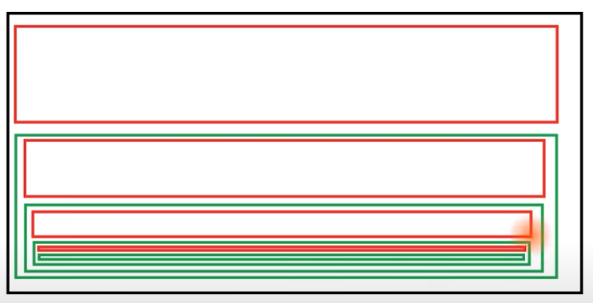
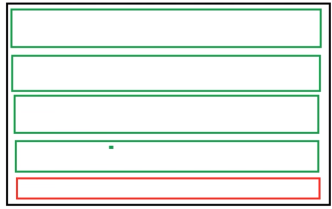

Significa 'llamar de vuelta', 'retrollamada'. Una retrollamada o devolución de llamada (en inglés: callback), es una función ejecutable «A» que se usa como argumento de otra función «B».
De esta forma, al llamar a «B», esta ejecutará «A». Esta acción puede ser inmediata, lo que se denominará retrollamada sincronizada o puede producirse en un punto posterior, lo que se denominaría retrollamada asíncrona. El siguiente codigo es on funciones tradicionales.
function saludar(nombre) {
console.log(`Hola ${nombre}!`);
}
function procesarEntradaDeUsuario(callback) {
let respuesta = prompt('Ingresa tu nombre');
callback(respuesta);
}
procesarEntradaDeUsuario(saludar);
Tambien se puede escribir:
function procesarEntradaDeUsuario(callback) {
let respuesta = prompt('Ingresa tu nombre');
callback(respuesta);
}
procesarEntradaDeUsuario(function(nombre) {
console.log(`Hola ${nombre}!`);
});
El siguiente es lo mismo pero con funciones flecha.
const saludar = (nombre) => {
console.log(`Hola ${nombre}!`);
}
const procesarEntradaDeUsuario = (callback) => {
let respuesta = prompt('Ingresa tu nombre');
callback(respuesta);
}
procesarEntradaDeUsuario(saludar);
Supongamos que tengo este array con X objetos de clase Persona { ... } segun los datos de ciertos usuarios.
class Persona {
constructor(nombre, instagram) {
this.nombre = nombre;
this.instagram = instagram;
}
}
const datos = [
['Lucas Dalto', '@Soydalto'],
['Robertico', '@Robertico'],
['Rancio Ramirez', null], // @Rancioramirez
['Kamila Nesa', '@Milanesa']
];
// Crear objetos Persona con los datos y guardarlos en un array
let personas = [];
for (i in datos) {
let nombre = datos[i][0],
instagram = datos[i][1];
personas[i] = new Persona(nombre, instagram);
}
console.log(personas) // [Persona { ... } , Persona { ... }, Persona { ... }, Persona { ... }]
Ahora yo quiero crear una funcion que verifique si existe una persona en el indice de Array que yo elija, y despues quiero que si existe verifique si estan completos los datos (nombre e instagram), sino existe o falta algun dato muestre cual fue el error... puedo usar funciones con callbacks encadenados.
const verificarIndice = (i, callback) => {
let error;
// Si no hay persona en el indice le pasa el error al callback. El indice y el otro callback van vacios
if (!personas[i]) {
error = true;
callback(error, null, null);
} else {
// Si tenemos una persona le comunica al callback que no tenemos error y le pasa el indice de la persona a mostrarDatos.
// Asi como su propio callback para verificarlos antes de mostralos
error = false;
callback(error, i, verificarDatos);
}
}
Ahora escribo las funciones callbacks para verificar y mostrar los datos...
const mostrarDatos = (error, i, callback) => {
if (error) {
console.log('(!) El indice que buscas esta fuera del rango');
} else {
// console.log(`Nombre: ${nombre}` + '\n' + `Instagram: ${instagram}`);
callback(i);
}
}
const verificarDatos = (i) => {
let nombre = personas[i].nombre,
instagram = personas[i].instagram;
if (!nombre && !instagram) {
console.log('No tenemos datos');
} else if (!nombre) {
console.log('El nombre no fue encontrado' + '\n' + `Instagram: ${instagram}`);
} else if (!instagram) {
console.log(`Nombre: ${nombre}` + '\n' + 'El instagram no fue encontrado');
} else {
console.log(`Nombre: ${nombre}` + '\n' + `Instagram: ${instagram}`);
}
}
verificarIndice(1, mostrarDatos);
// mostrarDatos(false, 1, verificarDatos);
// verificarDatos(1);
// Nombre: Robertico
// Instagram: @Robertico
verificarIndice(2, mostrarDatos);
// mostrarDatos(false, 2, verificarDatos);
// verificarDatos(2);
// Nombre: Rancio Ramirez
// El instagram esta vacio
verificarIndice(5, mostrarDatos);
// mostrarDatos(true, null, null);
// (!) El indice que buscas esta fuera del rango
Esta es una buena estructura de control, en todo caso tambien es complejo de leer, incluso aqui donde la funcion verificarDatos() solo debe validar 2 datos del usuario, pero en el caso de que sean mas (3 xd) se vuelve un menjunge los condicionales en la funcion... para arreglar este problema de condicionales son de utilidad el uso de callbacks junto a las Promesas.
Las promesas son un objeto de Clase Promise. Para crear este objeto la funcion constructora recibe como argumento otra funcion A... esta funcion A recibe como argumento otras dos funciones B y C.
Las funciones B y C reciben el nombre de resolve y reject, en cuestion. Porque representan si la promesa fue rechazada (fracaso) o se resolvio (fue cumplida).
let llave = 'xMlf3';
function funcionA(resolve, reject) {
if (llave != 'xMlf3') {
reject('La clave proporcionada no es la correcta');
} else {
resolve('Permiso concedido');
}
}
const promesa1 = new Promise(funcionA);
console.log(promesa1); // Promise {>fulfilled<: 'Permiso concedido'}
llave = '12345';
const promesa2 = new Promise(funcionA); // (!) Error
console.log(promesa2); // Promise {>rejected<: 'La clave proporcionada no es la correcta'}
Este metodo de un objeto Promise accede al valor que tiene una promesa que se resolvio (no fracaso).
Recibe como parametro una funcion D, esa funcion D recibe otro argumento el cual tomara el valor de la promesa resuelta... es decir de resolve.
let llave = 'xMlf3';
function funcionA(resolve, reject) {
if (llave != 'xMlf3') {
reject('La clave proporcionada no es la correcta');
} else {
resolve('Permiso concedido');
}
}
const promesa1 = new Promise(funcionA);
console.log(promesa1); // Promise {>fulfilled<: 'Permiso concedido'}
function funcionD(valor) {
console.log(valor); // Permiso concedido
}
promesa1.then(funcionD);
En todo caso el metodo anterior no sirve de nada si la promesa es rechazada (fracasa) escupiendo un error, por eso para tratar esto esta el metodo catch() de manejo de errores.
Este metodo recibe (al igual que then) una funcion F, la cual tiene un argumento que tomara el valor del error al ser rechazada la promesa... es decir de reject.
let llave = '12345';
function funcionA(resolve, reject) {
if (llave != 'xMlf3') {
reject('La clave proporcionada no es la correcta');
} else {
resolve('Permiso concedido');
}
}
const promesa1 = new Promise(funcionA);
function funcionD(valor) {
console.log(valor);
}
function funcionF(error) {
console.log(error); // La clave proporcionada no es la correcta
}
promesa1.then(funcionD).catch(funcionF);
En el menjunge de codigo para el problema de los condicionales estabamos manejando los errores en bloques anidados... lo que era ilegible y generaba confusion:
Ahora con las promesas junto a los metodos then() y catch() podemos hacer cada una de las verificaciones en su propio bloque...y si hay algun error pasar directamente al bloque al final:
Lo cual resulta mas legible e infinitamente mejor.
/* --- --- Crear los objetos Persona --- --- */
class Persona {
constructor(nombre, instagram) {
this.nombre = nombre;
this.instagram = instagram;
}
}
const datos = [
['Lucas Dalto', '@Soydalto'],
[null, '@Robertico'],
['Rancio Ramirez', null],
['Kamila Nesa', '@Milanesa']
];
// Crear objetos Persona con los datos y guardarlos en un array
let personas = [];
for (i in datos) {
let nombre = datos[i][0],
instagram = datos[i][1];
personas[i] = new Persona(nombre, instagram);
}
console.log(personas) // [Persona { ... } , Persona { ... }, Persona { ... }, Persona { ... }]
/* --- --- Nueva arquitectura --- --- */
const verificarIndice = (i) => {
const funcion = (resolve, reject) => {
// Si no hay persona en el indice rechaza la promesa
if (!personas[i]) {
reject('Error: El indice que buscas esta fuera del rango');
} else {
// Si tenemos una persona resuelve la promesa pasando el indice
resolve(i);
}
}
let promesa = new Promise(funcion);
return promesa;
}
const verificarNombre = (i) => {
const funcion = (resolve, reject) => {
if (!personas[i].nombre) {
reject('Error: No hemos encontrado el nombre');
} else {
resolve(i);
}
}
let promesa = new Promise(funcion);
return promesa;
}
const verificarInstagram = (i) => {
const funcion = (resolve, reject) => {
if (!personas[i].instagram) {
reject('Error: No hemos encontrado el instagram');
} else {
resolve(i);
}
}
let promesa = new Promise(funcion);
return promesa;
}
const mostrarDatos = (i) => {
let nombre = personas[i].nombre,
instagram = personas[i].instagram;
console.log(`Nombre: ${nombre}` + '\n' + `Instagram: ${instagram}`);
}
const mostrarError = (error) => {
console.log(error);
}
verificarIndice(0)
.then(verificarNombre)
.then(verificarInstagram)
.then(mostrarDatos)
.catch(mostrarError);
// Nombre: Lucas Dalto
// Instagram: @Soydalto
verificarIndice(1)
.then(verificarNombre)
.then(verificarInstagram)
.then(mostrarDatos)
.catch(mostrarError); // Error: No hemos encontrado el nombre
verificarIndice(2)
.then(verificarNombre)
.then(verificarInstagram)
.then(mostrarDatos)
.catch(mostrarError); // Error: No hemos encontrado el instagram
verificarIndice(6)
.then(verificarNombre)
.then(verificarInstagram)
.then(mostrarDatos)
.catch(mostrarError); // Error: El indice que buscas esta fuera del rango